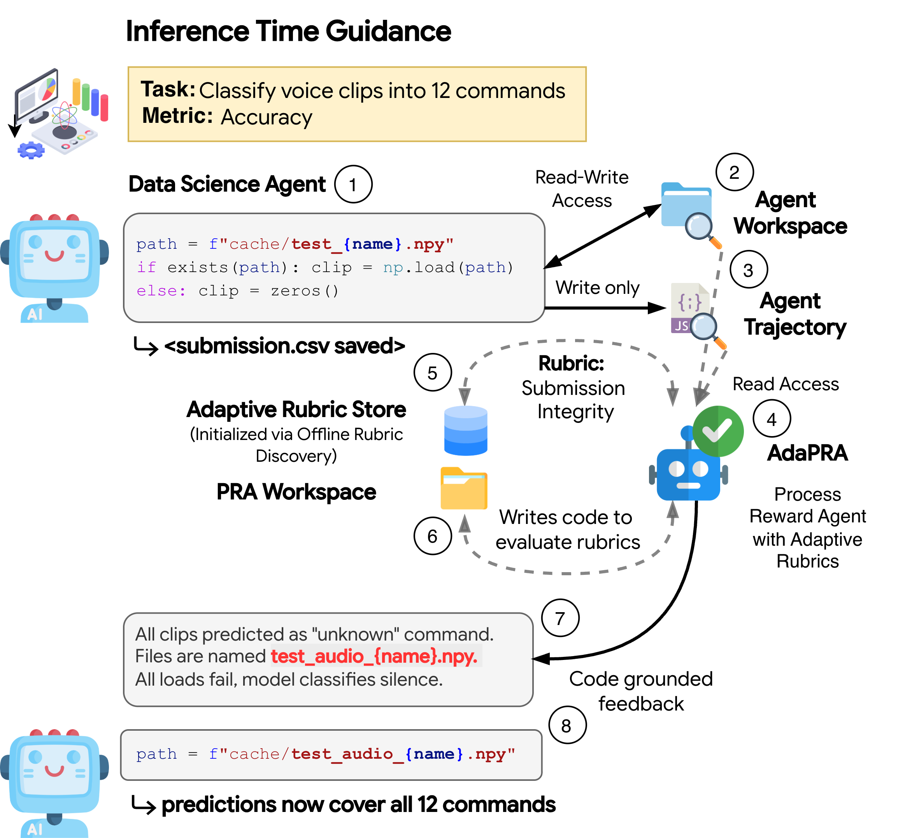
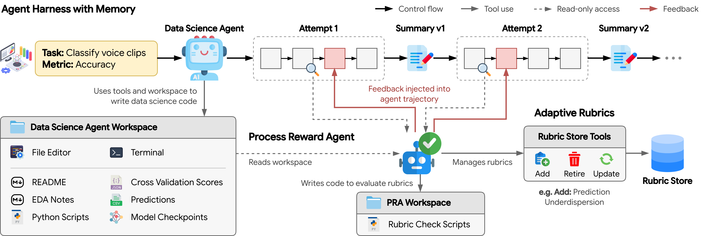
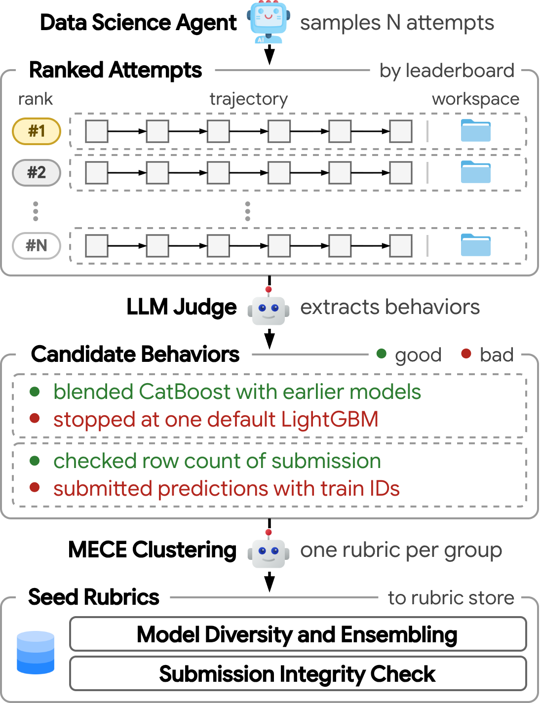

Data science agents can automate end-to-end machine learning workflows, yet they remain far from competitive on human leaderboards. Agents make process errors such as insufficient exploration, unsound validation, coding bugs, and poor use of a fixed budget (re-running the same exploratory data analysis and baseline models in every attempt).
We propose AdaPRA: a persistent harness that accumulates knowledge across attempts on the same task, with rubric-guided process supervision that identifies and corrects errors. Our process reward agent audits the agent's trajectory and workspace by executing checks, and adapts its rubrics to each task. Rubrics seeded from easier tasks generalize to harder tasks, and rubric adaptation further improves performance.
With five attempts per task, AdaPRA improves an 80B Qwen model's leaderboard percentile by 24.5 points on DSPredict-Easy and 14.8 points on DSPredict-Hard. Supervision with rubrics mined from one base model's runs also improves another (DeepSeek-V3.2), and AdaPRA beats DataPRM, a competitive PRM for data science.
Many process errors still produce a valid submission and leave no sign in the trajectory, so a judge that only reads the transcript misses them. AdaPRA's process reward agent runs checks on the agent's files instead.

Figure 1. The agent must classify voice clips into 12 commands. A wrong file path makes every test clip load as silent audio, so every prediction is “unknown” even though the trajectory shows no errors. AdaPRA checks the predictions file under the Submission Integrity rubric, finds the cause, and the agent fixes it.
A persistent harness keeps the agent's workspace across attempts; a process reward agent (PRA) reviews the attempt every few turns, writes and runs its own checks against the agent's files, and reports only the relevant failing rubrics.

Figure 2. AdaPRA overview. The agent works in a workspace that persists across attempts. During each attempt, the PRA reads the trajectory and workspace, runs check scripts in its own workspace, injects feedback on failing rubrics into the agent's trajectory, and adds, updates, or retires rubrics in the per-task store.
One workspace per task across all attempts: notes, features, models, and validation results carry over, so later attempts build on earlier ones instead of starting from scratch.
The PRA is itself an agent with a terminal. It recomputes CV scores, inspects predictions, and verifies the agent's claims against the read-only workspace before scoring each rubric.
Seed rubrics are mined offline from past runs by contrasting strong and weak attempts on the same task, using both the trajectory and the files each attempt leaves behind.
The PRA adds, updates, and retires rubrics in a per-task store, turning task-specific pitfalls found in one attempt into explicit criteria for later reviews.

Figure 3. Offline rubric discovery: an LLM judge extracts good behaviors and issues from ranked attempts, and a second call clusters them into a mutually exclusive, collectively exhaustive set of seed rubrics.
Contrastive. Each attempt is judged relative to the other attempts on the same task, so task difficulty is held fixed.
Trajectory + workspace. Most issues are visible only in the trajectory (344 of 564), while most good behaviors can be checked from the workspace alone (235 of 342), so discovery needs both views.
Compact seed set. 906 mined behaviors become 19 seed rubrics covering validation, model exploration and selection, preprocessing, submission integrity, and efficiency.
Kaggle leaderboard results with Qwen3-Coder-Next (80B) as the base agent and five attempts per task. Pct. is the mean leaderboard percentile. All rates use a fixed denominator over every task, so failing on a task counts as zero.
| Method | Best attempt | Per attempt (mean) | ||||||
|---|---|---|---|---|---|---|---|---|
| Pct. | Valid | >Median | Medal | Pct. | Valid | >Median | Medal | |
| Qwen3-Coder-Next + DSGym | 44.5 | 76.3 | 50.0 | 2.6 | 47.5 | 41.0 | 46.6 | 1.1 |
| Qwen3-Coder-Next + our harness | 60.8 | 100.0 | 71.1 | 7.9 | 51.3 | 84.5 | 53.9 | 2.6 |
| Process supervision on top of our harness | ||||||||
| + DataPRM | 54.6 | 100.0 | 65.8 | 5.3 | 44.8 | 100.0 | 44.6 | 2.1 |
| + PRA + adaptive rubrics (AdaPRA) | 69.0 | 100.0 | 86.8 | 7.9 | 61.0 | 100.0 | 73.2 | 3.7 |
| − adaptive rubrics | 67.3 | 100.0 | 86.8 | 7.9 | 58.8 | 99.5 | 72.5 | 4.2 |
| − PRA (no code execution) | 63.0 | 100.0 | 86.8 | 2.6 | 57.8 | 100.0 | 73.7 | 2.1 |
| Single-attempt references (reported by DSGym) | ||||||||
| Qwen3-Coder-480B + DSGym | – | – | – | – | 37.1 | 86.5 | 33.3 | – |
| GPT-5.1 (high) + DSGym | – | – | – | – | 60.4 | 100.0 | 75.0 | – |
| Method | Best attempt | Per attempt (mean) | ||||||
|---|---|---|---|---|---|---|---|---|
| Pct. | Valid | >Median | Medal | Pct. | Valid | >Median | Medal | |
| Qwen3-Coder-Next + DSGym | 21.3 | 68.5 | 11.1 | 3.7 | 25.2 | 36.3 | 11.8 | 3.0 |
| Qwen3-Coder-Next + our harness | 25.5 | 81.5 | 18.5 | 5.6 | 26.2 | 64.8 | 14.4 | 3.7 |
| Process supervision on top of our harness | ||||||||
| + DataPRM | 23.1 | 88.9 | 14.8 | 3.7 | 21.3 | 79.3 | 12.8 | 3.7 |
| + PRA + adaptive rubrics (AdaPRA) | 36.1 | 90.7 | 33.3 | 5.6 | 32.1 | 86.3 | 24.1 | 4.1 |
| − adaptive rubrics | 31.8 | 88.9 | 22.2 | 5.6 | 30.2 | 87.8 | 17.5 | 4.4 |
| − PRA (no code execution) | 31.8 | 90.7 | 25.9 | 9.3 | 30.9 | 83.0 | 19.8 | 8.1 |
| Single-attempt references (reported by DSGym) | ||||||||
| Qwen3-Coder-480B + DSGym | – | – | – | – | – | 66.7 | 5.9 | 2.4 |
| GPT-5.1 (high) + DSGym | – | – | – | – | – | 85.7 | 14.3 | 4.8 |
DSGym's single-attempt references have no best-attempt results; their Easy percentile is rescaled to our fixed denominator. DSGym does not report percentiles on DSPredict-Hard or medal rates on DSPredict-Easy. Medal rate is a noisy, thresholded metric.
Mean-percentile gain (best attempt) from each component; removing any one lowers performance on both benchmarks.
Over the DSGym harness. It raises the valid rate to 100% on Easy and from 68.5% to 81.5% on Hard; harder tasks need supervision on top.
AdaPRA over the −PRA variant, which scores rubrics by reading files alone. Execution also changes what the PRA adds, favoring rubrics that compute statistics of the agent's predictions.
AdaPRA over frozen seed rubrics. Adaptation matters more on the harder, more diverse benchmark, where it also raises the above-median rate from 22.2% to 33.3%.
Seed rubrics are discovered only on DSPredict-Easy, which is mostly tabular, yet they help on DSPredict-Hard, whose tasks span vision, text, audio, time series, and molecular data.
Frozen seed rubrics transfer. With the seed rubrics frozen, supervision adds 6.3 percentage points over our harness on DSPredict-Hard, close to its 6.5-point gain on DSPredict-Easy.
The same process failures occur on both benchmarks. Every seed rubric fails in at least 24% of Hard attempts. Across the 19 rubrics, the PRA's importance scores are almost identically ranked on both benchmarks (Spearman ρ = 0.91), as are failure rates (ρ = 0.66).
Adaptation supplies the domain-specific criteria. The PRA adds at least one rubric on 79% of Hard tasks versus 51% of Easy tasks, encoding domain knowledge such as non-negative time-to-failure predictions in LANL Earthquake Prediction.
Rubrics also transfer across base models. Supervision with rubrics mined from Qwen3-Coder-Next's runs raises DeepSeek-V3.2's single-attempt mean percentile on DSPredict-Easy from 36.9 to 44.7.